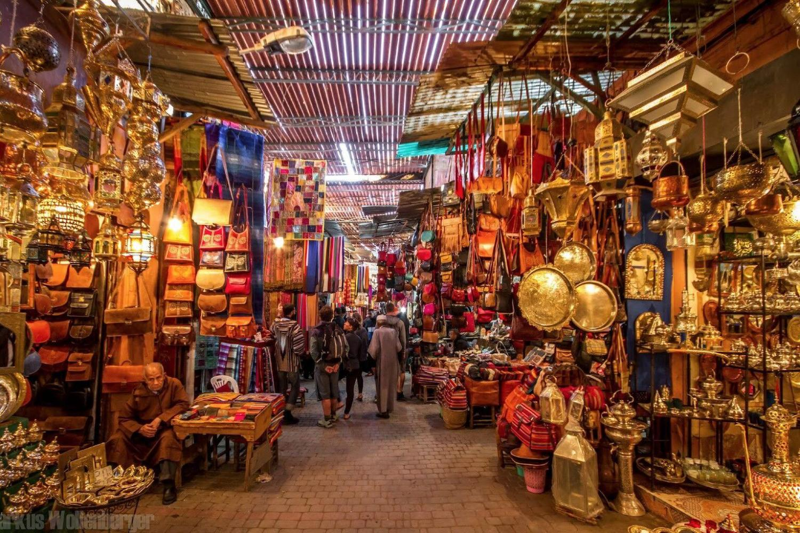
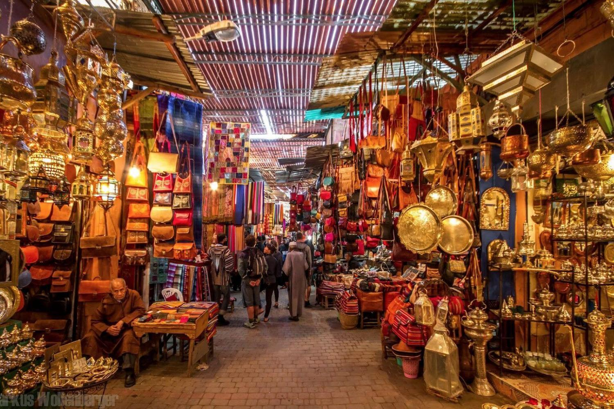

About Morocco
Morocco is a soverign state located in the North of Morcoos, overlooking the Mediterranean Sea to the north and the Atlantic Ocean to the west. Given the country's location at he mouth of the Mediterranean, Morocco attracted European influences, splitting the terrority into French and Spanish regions, however it regained independence in 1956. Morocco wields significant influence in both Africa and the Arab world, making it a regional power.
Morocco's preodominant relgion is Islam, and its official languages are Arabic and Berber. French is also widely spoken in the country given the influence up untilt he 1950s. Moroccan culture is a blend of Berber, Arab, Sephardi Jews, West African and European influences, making it very rich and complex. With Morocco hosting many different people from all different directions, other civilisations have affected the social structure of Morocco. Culturally speaking, Morocco has always been successful in combinging its Berber, Jewish and Arabic cultural heritgate with external influences such as the French and the Spanish and, more recently, the Anglo-American lifestyles.
Tourism is one of the most important sectors in Moroccan economy, focusing on the country's coast, culture, and history. The government of Morocco launched its Vision 2020, which outlines plans to make MOrocco one of the top tourist destinatins in the world by 2020. Due to its close proximity to Europe, most of the tourists tend to be from Europe, 20% being French. Many touritsts travel to Morocco to experience its culture, especially through its ancient cities. However, Morocco also thrills visitors with coastal cities and more adventurous activities near the Atlas Mountains.

Popular Cities
- Casablanca
- Essouria
- Marrakesh
- Rabat
- Tangier
- Fes
- Chefchaouen
Fes
Fes is a northeastern Moroccan city often referred to as the country’s cultural capital. It’s primarily known for its Fes El Bali walled medina, with medieval Marinid architecture, vibrant souks and old-world atmosphere. The medina is home to religious schools such as the 14th-century Bou Inania and Al Attarine, both decorated with elaborate cedar carvings and ornate tile work.
Al-Attarine Madrasa
Built in the 14th century, the al-Attarine Madrasa stands at the entrance of a spice and perfume market in the spiritual center of Fez, the second largest city in Morocco. The highlight of the small madrasa is its courtyard, its floors, and walls exquisitely decorated in the traditional patterns of Marinid craftsmanship.
The al-Attarine Madrasa, whose name means “the madrasa of the perfumers,” takes its name from its location at the entrance to a historic spice and perfume market in Fez. But unlike the busy souk that it borders, the al-Attarine Madrasa is a place of unusual calm.
At the heart of the madrasa is an exquisitely ornamented rectangular courtyard that opens onto a square prayer hall. Around these are the student accommodations, simple rooms that contrast greatly to the arcaded courtyard and prayer hall, which provide the main attraction for visiting tourist.
The courtyard is one of the finest examples of Marinid craftsmanship in Fez. The walls are decorated with carved stucco ornamentation, sections of Arabic calligraphy, and intricate zellige mosaic tiles forming colorful geometric patterns. Marble columns rise up from the floor holding elaborately carved wooden arches and cornices, the delicacy and detail of which almost defies belief. The floor is also covered in tiles, albeit far simpler than those decorating the walls, whose geometric patterns are considered too sacred to be stepped upon
Marrakesh
Marrakesh, a former imperial city in western Morocco, is a major economic center and home to mosques, palaces and gardens. The medina is a densely packed, walled medieval city dating to the Berber Empire, with mazelike alleys where thriving souks (marketplaces) sell traditional textiles, pottery and jewelry. A symbol of the city, and visible for miles, is the Moorish minaret of 12th-century Koutoubia Mosque.

Ben Youssef Madrasa
The Ben Youssef Madrasa is the largest madrasa in Morocco and one of the largest and most important in North Africa. Founded in the 14th century and later expanded, it ceased to function as an Islamic college in 1960, but remains one of the finest buildings in Marrakesh.
The college was founded in the 14th century during the reign of the Marinid sultan Abu al-Hassan, taking its name from the neighboring Ben Youssef Mosque. Initially a modest madrasa, it was later reconstructed during the Saadian Dynasty by the Abdallah al-Ghalib, the second Saadian sultan of Morocco.
Upon the completion of these works in 1565, the Ben Youssef Madrasa stood as one of the largest and most splendid theological colleges in North Africa. For more than four centuries, it housed as many as 900 students, an impressive feat considering the cramped nature of the building’s 130 student dormitory cells.
The madrasa ceased to function as a college in 1960 but was renovated and opened to the public in 1982. Historical significance aside, the madrasa draws in visitors who come to marvel at its intricate decorations that have drawn comparisons with the Alhambra in Granada, Spain (and leading some to conclude that artists may have been brought from Andalusia to work on the madrasa).


Souks and the Night Market


 

Tips and Tricks for the Souks
- Absorb the Chaos
- If you are looking for anything, the souks are definetly going to be the place to find it. Keeping that in mind, the Souks are full of activity at all times, making them very hectic. On top of the the souks can turn into a maze. Allow yourself to explore and take in all the sensations are you.
- Learn to say No
- Moroccan vendors can be annoyingly persuasive. You will be pestered by shopkeepers on entering the souk, but it is nothing a firm no can’t tackle. Devise the perfect no – it is suggested to tread the fine line between firm and polite.
- Get Lost
- Savour the smell of spices drifting up your nostrils, follow colour, go where your eye takes you, turn into little alleys, and duck into the tiniest of shops. There is is a suprise at every corner - brightly colored glassware, sheesha pipes, spices, kaftans, bag - you nam eit they have it. No matter how far you wander it is always easy to make your way back to the Djemaa-El-Fnaa, which is the main square of the market place.
- Visit a Tannery
- A tannery is a place where skins are processed, tanning hide into leather. While the smells can be overwhelming and the idea could be a tad grotesque, visiting a tannery can be surreal. It is definelty a unique expereince.
- Bargain
- The norm in the souks it to bargain, so do not be uncomfortable giving it a try. It is possible to bring down prices much farther than the original given to you by the shop owners. The friendly banter that ensures is a perfect way to get to know the locals.